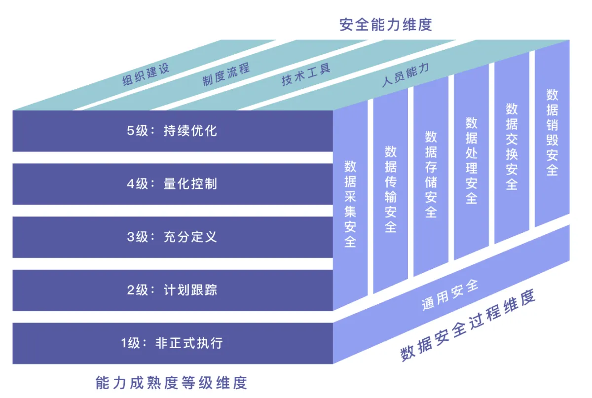
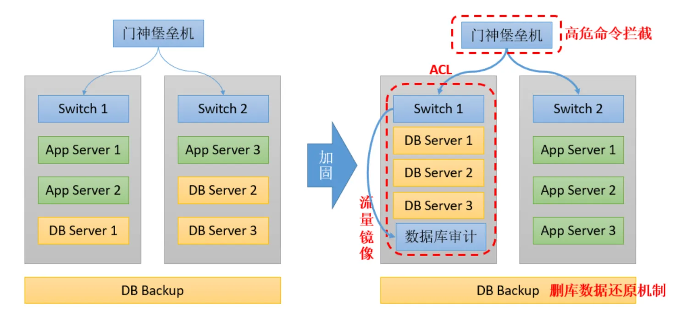

数据安全保护体系
一、数据安全保护的重要性
数据是企业发展的核心资产，能为企业提供市场调研、客户分析、竞争分析、市场营销等信息，帮助企业制定发展战略、制定规划。此外，数据还能为企业提供信息管理、统计分析、知识共享、沟通协助等，帮助企业提高效率、降低成本、提升竞争力。如果数据不能得到有效的保护，就可能会发生数据泄露、遗失、篡改等事件，造成严重的后果。数据泄露会导致公司商业机密、个人隐私、用户信任等的损失，并可能引发诉讼、处罚等法律责任。数据遗失会使公司无法正常运营，影响业务发展和客户关系。数据篡改可能导致公司决策失误、财务损失、信誉损失等，甚至危及公司的生存。
《网络安全法》要求网络运营者采取数据分类、重要数据备份和加密等措施，防止网络数据被窃取或篡改，加强对公民个人信息的保护，防止公民个人信息被非法获取、泄露或非法使用。《数据安全法》规定，未履行数据安全保护义务的， 责令暂停相关业务、停业整顿、关闭网站、吊销相关业务许可证或者吊销营业执照，对直接负责的主管人员和其他直接责任人员进行处罚。
二、数据安全面临的风险
泄露风险
敏感数据在未经授权的情况下被泄露出去，导致公司的商业机密、个人隐私等受到损害。
例如：2017 年，Equifax（美国信用评级机构）遭受黑客攻击，导致约 143 万美国人的个人信息泄露。这些信息包括姓名、生日、身份证号码、电话号码、邮箱地址、银行账户信息等。这起事件导致美国司法部对 Equifax 进行调查，并给 Equifax 带来了巨大的声誉损失。
遗失风险
数据因为硬件故障、软件漏洞、人为原因等导致丢失，无法恢复。
例如：2017 年，英国航空公司遭受黑客攻击，导致机场延误和航班取消。攻击造成的影响包括网络中断、计算机系统故障、航班信息丢失等。这起事件不仅给英国航空公司带来了巨大的经济损失，也使得旅客对该公司的信任度大幅下降。
中断风险
指信息系统因为技术故障、病毒攻击、网络中断等原因无法正常运行，导致业务中断。
例如：2017 年，微软的 Azure 云平台遭受 DDoS 攻击，导致多个区域的服务中断。这起事件造成的影响包括：部分客户无法访问公共网站、无法连接到数据库服务器、无法使用云服务等。微软在修复事件后表示，此次攻击的流量达到了历史新高，是迄今为止遇到的最大规模的 DDoS 攻击。
合规风险
指公司的数据处理、储存、传输过程中未能遵守相关的法律法规，导致公司面临监管处罚、信誉损失等风险。
例如：2018 年，谷歌因未能遵守欧盟的隐私条例而被罚款 4.34 亿欧元。欧盟调查发现，谷歌在未经用户同意的情况下，将用户的个人数据用于广告目的。这起事件不仅给谷歌带来了巨额罚款，也使得谷歌在欧盟的信誉受到了损害。
三、数据安全保障体系框架
1公司数据安全防护体系方案的目的、范围、有效期等信息。确定数据安全防护体系的目标和范围：明确保护的数据类型、数据所属的部门或业务流程、期望达到的安全水平等。
2数据安全政策：确定公司对数据安全的基本原则、要求、责任分配等方面的规定。确定数据安全责任人，明确数据安全责任人的职责，包括负责制定数据安全策略、审批数据安全相关的政策和流程、监督数据安全的实施情况等。
3数据安全管理体系：建立数据安全管理机构、流程、规范、培训、审计等制度，确保数据安全防护体系的有效运行。制定数据安全的政策和流程，包括数据分类、数据存储、数据备份、数据传输、数据加密等。
4数据安全风险评估：对公司的数据进行风险评估，识别公司所面临的主要数据安全风险。识别数据安全风险：分析数据的来源、流动路径、使用方式等，识别潜在的安全威胁。
5数据安全防护措施：根据风险评估结果，确定公司采取的数据安全防护措施，包括物理安全、逻辑安全、网络安全、系统安全等方面。部署数据安全防护技术：按照规划安装、配置、测试数据安全防护技术，确保其正常运行。
6数据安全应急响应：制定数据安全应急响应流程、联络机制、处置措施等，以应对数据安全事件的发生。
7数据安全培训与普及：开展数据安全培训课程，使员工掌握数据安全知识和技能，提高数据安全意识。建立数据安全培训制度，定期对员工进行数据安全意识培训，提高员工的数据安全意识。
8数据安全审计与监控：定期对数据安全防护体系进行审计，确保其有效运行；设置数据安全监控系统，及时发现和处理数据安全事件。
9数据安全持续改进：根据实际运行情况、法规要求、业务发展等因素，不断完善数据安全防护体系，确保其始终保持有效。

借鉴《DSMM 数据安全能力成熟度模型》，以数据为中心，重点围绕数据生命周期，从组织建设、制度流程、技术工具和人员能力等方面进行安全保障。关注企业自身业务产生的数据和与外部第三方组织交互的数据，衡量组织机构的数据安全能力，促进组织机构了解并提升自身的数据安全水平。
四、数据安全技术防护措施
保证数据可用性、完整性与数据安全，依据数据安全生命周期，从数据创建、存储、使用、共享、归档至销毁，使用了数据分级、数据加密等措施，保障了数据的保密性、完整性、可用性、真实性、授权、认证和不可抵赖性。
1数据加密：使用加密技术将数据转换为密文，以防止未经授权的人访问数据。使用数据加密技术，对数据进行加密，保护数据的安全。
2数据备份：将数据复制到其他存储介质上，以防止数据遗失。
3数据完整性检测：通过校验和、数字签名等技术，来检测数据是否被篡改。
4数据安全访问控制：通过用户身份认证、权限管理等技术，来控制对数据的访问权限。使用访问控制技术，对数据访问权限进行控制，只允许授权的用户访问数据。
5网络安全防护：通过防火墙、入侵检测系统、虚拟专用网络等技术，来防止网络攻击。
6系统安全防护：通过安全审计、系统漏洞修补、可信计算机等技术，来保护系统安全。

数据生命周期安全风险清单
| 数据生命周期 | 技术 |
|---|---|
| 采集阶段 | 1.数据源服务器存在安全风险，如未及时更新漏洞、未进行主机加固、未进行病毒防护。 2.缺少采集访问控制及可信认证。 3.缺少数据层安全防护，如内部人员拖库和外部SQL注入等。 4.缺少审计及异常事件告警。 |
| 传输阶段 | 1.采集前置机存在安全风险，如未及时更新漏洞、未进行主机加固、未进行病毒防护。 2.缺少传输过程中异常行为控制及相关身份认证。 3.未进行加密传输。 4.传输内容未进行审计及异常操作告警。 |
| 存储阶段 | 1.数据池服务器存在安全风险，如未及时更新漏洞、未进行主机加固、未进行病毒防护。 2.数据明文存储，具有泄露利用风险。 3.缺少统一访问控制及相关身份认证。 4.缺少审计及异常操作告警。 5.缺少数据容灾备份机制。 6.网络架构设计不合理，未进行物理隔离或者逻辑隔离。 |
| 处理阶段 | 1.缺少数据访问控制。 2.缺少数据脱敏机制 。 3.缺少数据处理审计及异常操作告警。 |
| 交换（共享、使用）阶段 | 1.交换服务器存在安全风险，如未及时更新漏洞、未进行主机加固、未进行病毒防护。 2.缺少数据访问控制。 3.缺少数据脱敏机制。 4.缺少数据处理审计及异常操作告警。 |
数据生命周期安全加固清单
| 加固需求 | 需求描述 |
|---|---|
| 数据库分类分级 | 数据库/表/字段全量清单和用途分类，对每个数据库和表进行重要性定级 |
| 漏洞弱点监控扫描 | 定期对操作系统和数据库服务，进行漏洞扫描和安全基线检查，及时修复。 |
| 网络安全域划分 | 建立独立的数据库网络安全域，只允许管理和业务两个通道访问。 |
| 管理通道访问控制 | 只允许堡垒机才能访问，登陆堡垒机的人员和权限，需要纸面化加审批授权。 |
| 业务通道访问控制 | 只允许各业务的服务器集群，通过IP白名单访问，密钥加密，开发测试人员无法拿到线上密钥。 |
| 操作安全管控 | 管理侧，危险操作拦截，防止无意或恶意执行错误的指令，通过堡垒机过滤高危操作。 |
| 透明加密技术 | 管理侧，研发部署TDE透明加密技术，防止直接从硬盘拷库。 |
| 数据库审计 | 业务侧，危险操作风控，防止黑客进行SQL注入或脱库，通过数据库审计风控策略，及时止损。 |
| 数据加密存储 | 业务侧，推动数据入库加密工作，敏感信息在库中是加密存储，无法直接查看到明文。 |
| 数据灾备机制 | 制定数据灾备计划，考虑异地备份、数据冷备和数据恢复演练。 |
五、数据安全保护重点技术
DLP 终端加密
在受管控的终端上安装代理程序，由代理程序与后台管理平台交互，并结合 企业的数据管理要求和分类分级策略，对下载到终端的敏感数据进行加密， 从而将加密应用到企业数据的日常流转和存储中。信息被读取到内存中时会 进行解密，而未授权复制到管控范围外则是密文形式。
应用内数据加密
应用内加密（集成密码 SDK）是指应用系统通过开发改造的方式，与封装了 加密业务逻辑的密码 SDK 进行集成，并调用其加解密接口，使目标应用系统 具备数据加密防护能力。
数据库加密网关
数据库加密网关是部署在应用服务器和数据库服务器之间的代理网关设备， 通过解析数据库协议，对传入数据库的数据进行加密，从而获得保护数据安全的效果。
TDE 透明数据加密
在数据库内部透明实现数据存储加密、访问解密的技术，Oracle、SQL Server、 MySQL 等数据库默认内置此功能。数据在落盘时加密，在数据库内存中是明文，当攻击者“拔盘”窃取数据，由于数据库文件无法获得密钥而只能获取 密文，从而起到保护数据库中数据的效果。
UDF 用户自定义函数加密
在数据库支持的形式上，通过定义函数名称及执行过程，实现自定义的处理 逻辑。UDF 用户自定义函数加密，是通过 UDF 接口实现数据在数据库内的加 解密。
FHE 全同态加密
由全同态加密方案产生的密文，可以对密文进行任意计算，解密结果与明文 进行相应计算的结果相同，实现数据处理权和使用权的分离，防止数据泄漏 的同时，充分利用外部算力。
MPC 多方安全计算
MPC 安全多方计算，允许多个数据所有者在互不信任的情况下进行协同计算， 输出计算结果，并保证任何一方均无法得到除应得的计算结果之外的其他任 何信息。MPC 技术可以获取数据使用价值，却不泄露原始数据内容，该技术 有输入隐私性、计算正确性及去中心化等特性。
ZKP 零知识证明
零知识证明（ZKP），是一种基于概率的验证方式。验证者基于一定的随机 性向证明者提出问题，如果证明者都能给出正确回答，则说明证明者大概率 拥有他所声称的“知识”。零知识证明并不是数学意义上的证明，因为它存 在小概率的误差，欺骗的证明者有可能通过虚假的陈述骗过验证者。换句话 说，零知识证明是概率证明而不是确定性证明，但是也存在技术能将误差降 低到可以忽略的值。